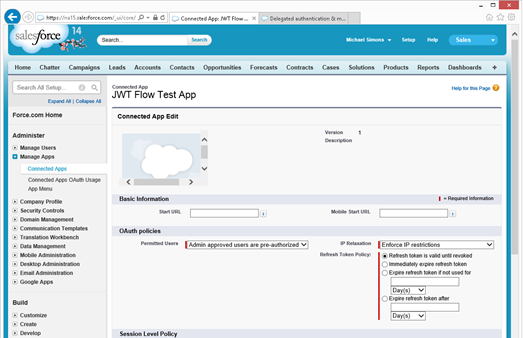

|
|
Depending on the options you've chosen, there may be some mandatory next steps to query Salesforce
Service Account with a JWT Bearer Token Authentication
If you've selected Service Account with a JWT Bearer Token for your runtime authentication strategy, you'll need to manually configure a few extra steps in the Salesforce Portal.
- Log into the Salesforce.com
- Navigate to Settings > Admininister > Manage Apps >Connected Apps
- Edit the appropriate connected app.
- In the "Permitted Users" drop down select "Admin approved users are pre-authorized"

|